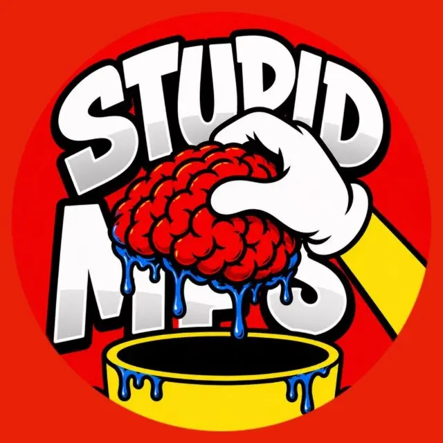
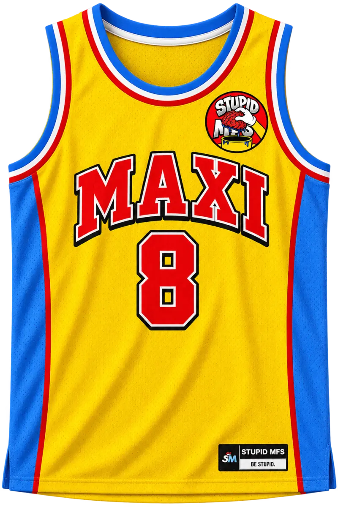

01
01
Brand ecosystem · Product design · Merchandise
Stupid Maxi Friends
Created a playful community brand that grew into a connected world of characters, merchandise, entertainment, creator tools and a custom social product. The system carries one unmistakable voice across every touchpoint.
- The opportunity
- Turn an irreverent Web3 community into a brand people could recognize, participate in and wear.
- My contribution
- Creative direction across identity, characters, web experiences, community product concepts and merchandise.

